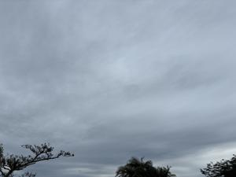
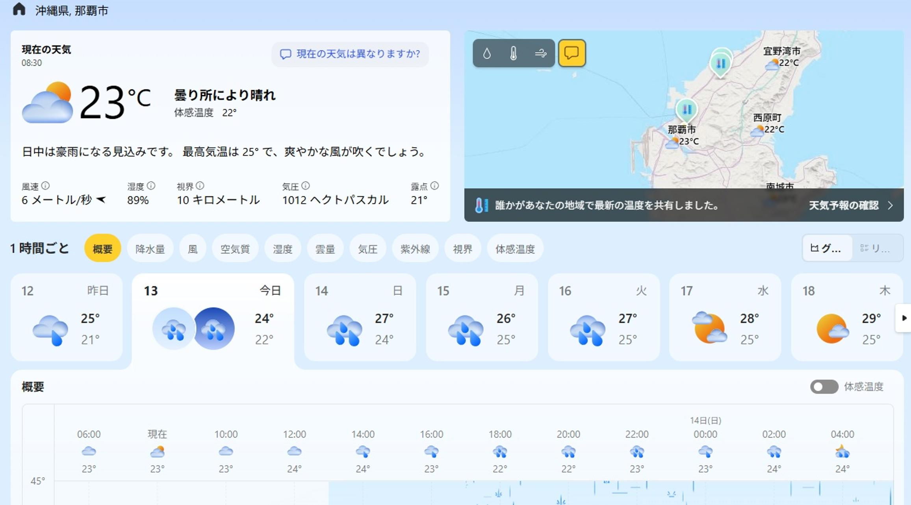

うるがいの話 ある日
最新: リコール【うるがいの話 ある日】とは 一日だけのプログです
『うるがいの話』の最新一日だけのプログで、通信料が少なく経済的だ。カニの画像をクリックすると全ての日付が載る『うるがいの話』サイトを表示します
|
|
【うるがいの話】 うるがい(ｳﾙｶﾞｲ urugai)とは、『もずくがに』の名前でとても大きくなります。 |
|---|---|
|
|
【カミマヤーの話】 猫のことを方言でマヤーといいます。カミマヤー（kamimayaa）とは、神の猫のことです。 |
|
【たながぁの音楽】 たながぁ（ﾀﾅｶﾞｰ tanagaa）とは手長えびのことで、何種類かあり大きいのは車 エビぐらいになります。 |

|
【ぶながぁの話】 ぶながぁ(ﾌﾞﾅｶﾞｰ bunagaa)とは、赤い髪の毛、赤い身体、そして身長は１ｍ２０ｃｍ ぐらい、川の蟹を食べているの目撃された。場所は沖縄県国頭郡大宜味村のと ある村僕の隣近所に住んでいる爺さんから、聞いた話です。 |
|
|
【ギーマの話】 ギーマ(giima)とは、山原の里山に咲くスズランに似た、 花を付けます。実は食べられます、 気が付くと口の周りが紫になっています。 |
2026年06月13日 (土）リコール
15:49

カウルルーバーに関するリコール
不具合の内容
カウルルーバーにおいて、車体への組付け指示が不十分であった
ため、止水シール部から雨水等がブレーキブースタに滴下するも
のがあります。そのため、ブレーキブースタに錆が発生し、その
ままの状態で使用を続けると、錆が早期に進行して、最悪の場合
、ブレーキブースタに穴があき、ブレーキペダルの操作力が増大
し、制動距離が長くなるおそれがあります。
コドモが利用している軽自動、ダイハツのＭＯＶＥのリコール対
応を私が、行いました。軽自動をダイハツに９時半に預け、代車
を借りる。終了したと連絡があったのは、１３時半、家に戻った
ら１５時になっていました。道路が混んでて。そして夜２３時に
到着するコドモは迎えに行きます。なお、軽自動はコドモのアパ
ートにありますですから、アパートへ普通乗用車で行くのですよ
８時半２３度、今は２４度今日は、寒い日でした。
